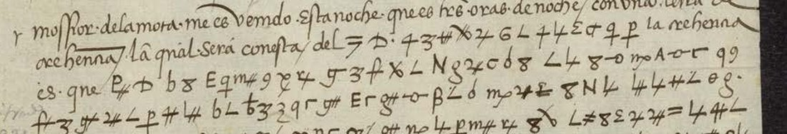
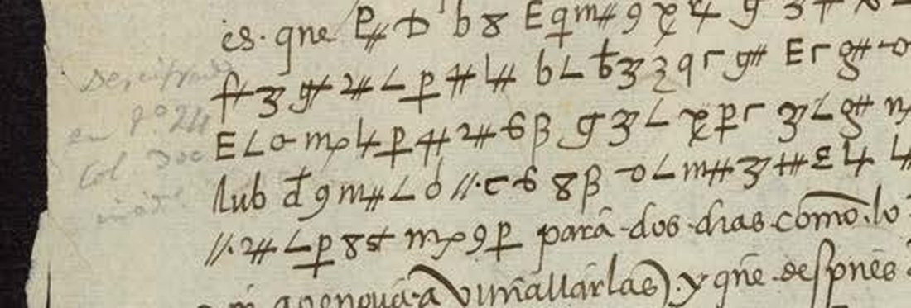
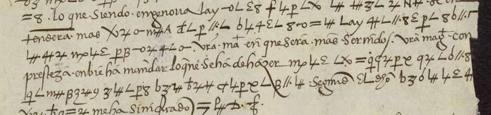

01 The letter and the print
One leaf. The recto carries the letter, with about seventeen lines in which cipher runs alternate with clear Spanish; the verso carries the close in clear and the signature Don Hugo de Moncada. The folio stamp reads “20213/12-9” and a later hand has written “Monago 6 octubre 1524” at the head. Moncada was then captain-general of the galleys, at Monaco with the fleet that had supported Bourbon’s siege of Marseille; he became viceroy of Naples only in 1527. The catalogue’s “from the viceroy of Naples” followed Tomokiyo’s gloss.
DECODE has the letter as R1191, “NLS_MSS_20213_12”, dated 1524, with no sender or receiver, symbol set “Graphic signs” and status “Decrypted”, though no decipherment is attached. The BNE Digital viewer sits behind a Cloudflare check that a script cannot pass; the DECODE images (970 × 1395 px) were used.

The 1854 editors printed the letter under the heading “Carta de D. Hugo de Moncada á Carlos V, avisándole que el ejército había llegado á Niza… Monago 6 de octubre de 1524”, from the original then in the Salazar collection (“Salazar, C. V., 1524, p. 3”). Before the cipher passage they note that it “sigue en cifra, y descifrado después de letra de la secretaría de Carlos V”, on a following leaf headed CLARO, and they mark its end “Hasta aquí la cifra”. That leaf is no longer with the letter at the BNE.
02 The cipher
Each cipher run was transcribed sign by sign from the image, deskewed and enlarged three to eight times: 442 signs in seventeen runs, 54 distinct sign forms. Each run was then aligned with the printed text by an EM aligner that lets a sign stand for a letter, two letters or nothing, and lets the encipherer skip a letter; the result was checked by hand.
- It is a homophonic substitution of Spanish letters: e is written with the angle ∟ (44 times) or an upright 8 (17); a with ɼ, ƶ, 9 or A; n with ꝑ or β; s with δ, -σ or ʃ‡; t with = or ∥; u/v with ʒ. There are no syllable signs.
- A double cross written after a base sign makes a different sign: ʃ is q (in ʃʒ∟ que), ʃ‡ is s or z; ƶ is a, ƶ‡ is i or y.
- A few code groups are written in Latin letters: lay = yo (twice), ne = duque in “el duque de Genoua”.
The full table, with counts and proof words, is KEY.md. Moncada’s key is not the one Lope de Soria used at Genoa in 1523–24 (three-letter code groups), nor any of Kolosova’s.
03 The reading
The cipher runs are in bold; clear text is roman. Readings follow the 1854 print except the passage marked, which the print left as dots. Spelling is the letter’s.
Mossior de la Mota me es venido esta noche, que es tres oras de noche, con vna letra de crehenna, la qual sera con esta, del ‹=D·› duque de Borbon; la crehenna es que ‹P‡D› me rogaua que le lleuase a España, ‹99› diziendome muchas razones para ello. Yo le he respondido que vna vez ponga el exercito de V. Md. en seguro, y que estas galeras no tienen pan para dos dias, como lo tengo escrito a V. Md., y es forçado yr a Genoua a vituallarlas, y que despues de vitualladas se ha de veer si el duque de Genoua querra dexar yr las galeras, y el visorey de Napoles las de aquel reyno, que solo quedan las de España mal en orden; y que en caso que su persona ouiese de yr, que querria que fuese fuerte, lo que siendo en Genoua yo sere con el, y que alli se entendera mas largamente sobre esto. Yo deterne esta yda por no saber en que V. Md. sera mas seruido. V. Mag. con presteza enbie a mandar lo que se ha de hazer por el. Tornando a este negocio viene muy mal contento, segun el dicho mossior de la Mota me ha significado ‹=P‡D·f›.
Translation. Monsieur de la Mota came to me tonight, at three hours of night, with a letter of credence, which goes with this, from the Duke of Bourbon. The credence is that he asked me to carry him to Spain, giving me many reasons for it. I answered that once he puts Your Majesty’s army in safety — and these galleys have no bread for two days, as I have written to Your Majesty, and must go to Genoa to be victualled, and after that it remains to be seen whether the Duke of Genoa will let his galleys go, and the viceroy of Naples those of that kingdom, since only the Spanish ones are left, in poor order — if his person is to go, I would want it to go in strength; when he is at Genoa I will be with him, and there we will discuss it at more length. I will hold back this voyage, not knowing how Your Majesty will be best served. May Your Majesty quickly send orders what is to be done for him. He comes back from this business very discontented, as the said Monsieur de la Mota has told me.
The clear parts of the letter, before and after, report that the imperial army reached Nice on 6 October, having crossed the mountain by the Genoese riviera with its artillery broken up and carried on mules; that the brigantine carrying Bourbon’s man was taken by the French at Toulon; and that Francis I was said to be at Saint-Maximin. The full text is in reading.txt.
The gap is the one thing the cipher adds: after the failure before Marseille, Bourbon wanted to go to Spain, to the Emperor, in Moncada’s galleys, and Moncada stalled for want of bread and orders.

04 What remains open
- Three code groups, 12 signs, each once: =D· after “del” and before the ciphered “duque de Borbon”, P‡D opening the credence, and =P‡D·f after “me ha significado”. The print has no counterpart for them; they are titles or names (the Duke, the Emperor), but nothing in the letter fixes which. Graded I.
- 99 at the end of cipher line 2, set apart at the margin between a España and diziendome: either two a (9 is a elsewhere) or line-end nulls. Graded I.
- Readings graded C rather than H because the scan is small: diziendome (the second sign, ʒ, is u everywhere else), para ello (six signs for eight letters) and galeras in line 8 (five signs).
Measured on the transcription: 428 of 442 cipher signs have a value (96.8%).
05 Sources
- Biblioteca Nacional de España, MSS/20213/12; BNE Digital viewer 8b55d967…; DECODE R1191 (images 1–2).
- Colección de documentos inéditos para la historia de España, vol. XXIV (Madrid 1854), pp. 417–419, “Carta de D. Hugo de Moncada á Carlos V… Monago 6 de octubre de 1524”; Internet Archive.
- S. Tomokiyo, Cryptiana, Spanish ciphers of Charles V’s time (entry of 8 June 2026).
Transcription, alignment, key, reading and profile are in moncada1524/.